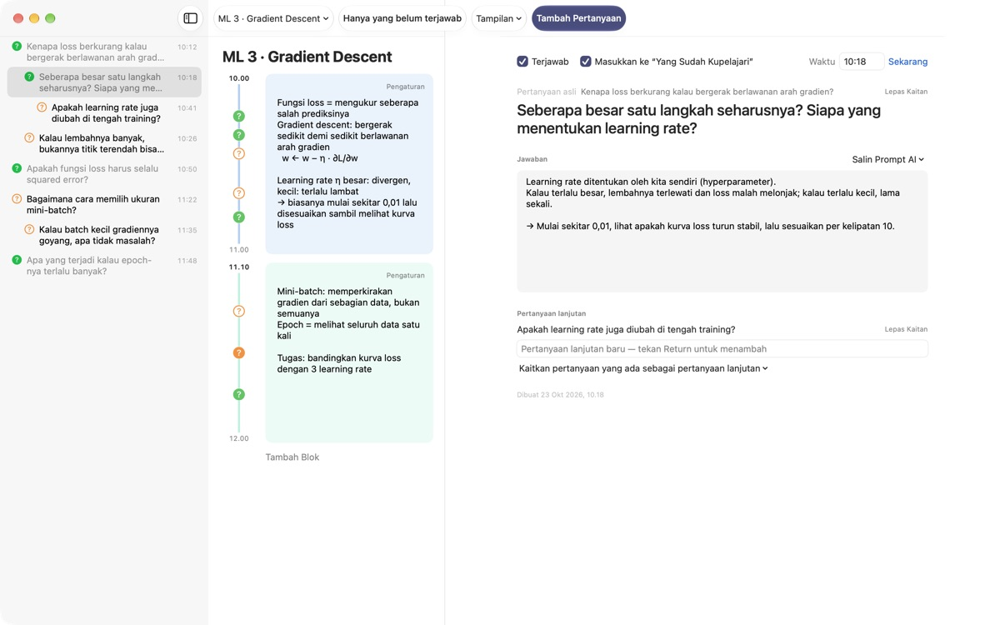
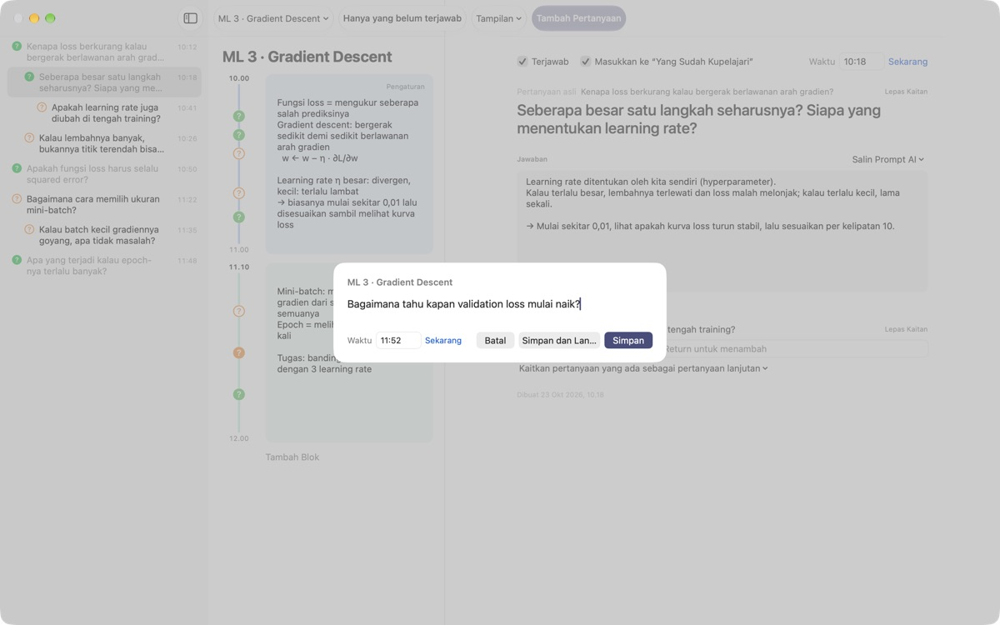
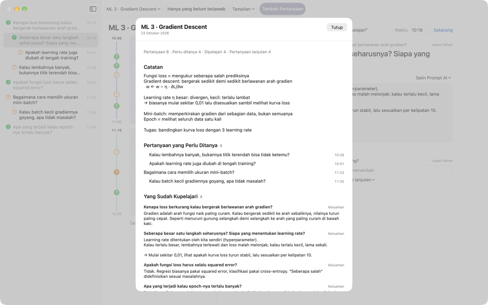
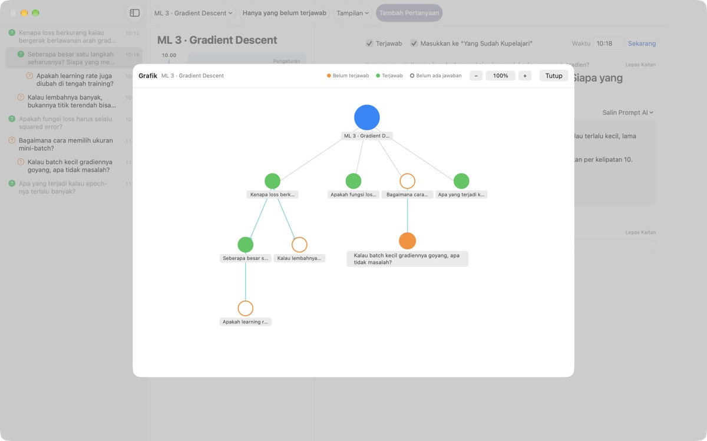

Jangan biarkan pertanyaan
saat kuliah hilang begitu saja
Tekan ⌘⇧N, ketik satu baris, dan pertanyaanmu tersimpan di samping catatan menit itu juga. Kamu tetap menyimak, jawabannya dicari nanti.
Untuk macOS 14 atau lebih baru. Tanpa akun, semuanya tetap di Mac ini.

Coba di sini
Kamu sedang mengikuti kuliah machine learning. Tulis pertanyaan lalu simpan: tanda ? muncul di samping blok jam itu. Ubah jamnya ke luar blok, dan blok baru akan dibuat untuk menampungnya.
Begitu kuliah selesai, masih ingat pertanyaanmu?
Baru saja kamu berpikir "eh, kenapa begitu?", dosen sudah pindah ke materi berikutnya. Tanda tanya di pinggir catatan lupa berasal dari penjelasan yang mana, dan pertanyaannya tak pernah terjawab. LectureQ menyematkan setiap pertanyaan ke catatan saat itu dan menjaganya tetap terlihat sampai kamu memahaminya.
Bertanya tanpa ketinggalan kalimat berikutnya
Buka jendela isian lewat Tambah Pertanyaan di bilah alat atau ⌘⇧N. Jamnya terisi sendiri. Return menyimpan, ⌘Return menyimpan sekaligus menyiapkan pertanyaan berikutnya.
Setiap pertanyaan tampil sebagai ? di samping blok waktunya, jadi nanti kamu langsung tahu dari bagian kuliah mana pertanyaan itu muncul.

Pertanyaan yang terjawab jadi ilmu
Tulis jawabannya dengan kata-katamu sendiri, tandai terjawab, dan pertanyaan itu masuk ke Yang Sudah Kupelajari di ringkasan. Yang masih terbuka tetap di Pertanyaan yang Perlu Ditanya, jadi daftar untuk kuliah berikutnya tersusun sendiri.Salin Prompt AI di detail pertanyaan menaruh prompt siap pakai di papan klip, lengkap dengan nama kuliah dan catatanmu saat itu. Tinggal tempel ke layanan AI yang biasa kamu pakai.

Lihat ke mana pemikiranmu mengalir
Pertanyaan lanjutan tersusun menjorok di bawah pertanyaan asalnya, dan grafik menghubungkannya dengan panah. Klik sebuah simpul untuk langsung ke pertanyaan itu.
Di Status Belajar kamu bisa mencatat posisimu sekarang, target di akhir kursus, dan apa yang ingin dipelajari, lalu membandingkannya.

Mulai dalam tiga langkah
- 1
Buat kuliah
Dari menu kuliah di kiri bilah alat, atau impor percakapan yang disimpan sebagai Markdown.
- 2
Catat begitu muncul
Tekan
⌘⇧N. Satu baris cukup, jamnya sudah terisi. - 3
Jawab belakangan
Tulis jawabannya lalu klik ? untuk menandainya terjawab. Pertanyaan pindah ke Yang Sudah Kupelajari.
Pintasan papan ketik
- ⌘⇧N
- Tambah pertanyaan
- Return
- Simpan
- ⌘Return
- Simpan dan tulis yang berikutnya
- Esc
- Batal
- ⌘1
- Ringkasan: pertanyaan yang perlu ditanya, yang sudah dipelajari, catatan
- ⌘2
- Grafik: pertanyaan asli dan lanjutan
- ⌘3
- Blok Waktu: blok semua kuliah sesuai urutan waktu
- ⌘4
- Status Belajar
- ⌘+ · ⌘- · ⌘0
- Teks lebih besar, lebih kecil, ukuran bawaan
Semuanya juga ada di menu Tampilan.
Semua fitur gratis
Gratis
- Pertanyaan cepat dan catatan per blok waktu
- Pertanyaan lanjutan dan grafik
- Ringkasan, tinjauan blok waktu, dan Status Belajar
- Prompt AI lima langkah, disalin ke papan klip
- Impor percakapan dari Markdown
Dukung pengembang
- Kalau aplikasinya membantu, kirim tip kecil dari Pengaturan
- Tip tidak membuka fitur tambahan apa pun
Kirim tip atau tidak, semuanya berjalan sama.
Tanpa iklan dan tanpa akun. Catatanmu tetap di Mac ini.
Pertanyaan umum
Apa arti warna tanda ?
Di daftar, lingkaran oranye kosong berarti pertanyaan yang belum terjawab, lingkaran hijau penuh berarti sudah terjawab. Klik ? untuk mengubahnya, dan nyalakan Hanya yang belum terjawab di bilah alat untuk melihat yang masih terbuka saja. Di samping blok waktu, warna menunjukkan apakah sudah terjawab, dan lingkaran penuh berarti jawabannya sudah ditulis.
Bagaimana cara kerja blok waktu?
Dengan Tambah Blok, blok baru dimulai saat itu juga dan blok sebelumnya berakhir di situ. Kalau kamu mencatat pertanyaan pada jam yang tidak tercakup blok mana pun, blok baru dibuat di sekitarnya. Lewat Pengaturan di kanan atas blok, kamu bisa mengubah warna, jam mulai, dan durasi, atau menghapusnya. Kalau kamu sendiri menghapus blok, kuliah itu berhenti membuat blok otomatis.
Apa bedanya "Terjawab" dan "Yang Sudah Kupelajari"?
Saat mencentang Terjawab di detail pertanyaan, kamu juga memilih apakah pertanyaan itu masuk ke Yang Sudah Kupelajari. Di sana hanya muncul pertanyaan terjawab yang kamu sertakan. Kamu juga bisa mengeluarkan atau memasukkannya lagi dari ringkasan, dan jawabannya tetap ada.
Bagaimana cara kerja prompt AI?
Di detail pertanyaan, buka Salin Prompt AI di samping Jawaban lalu pilih langkahnya: Rapikan Pertanyaan, Cari Jawaban, Uji Balik Jawaban, Ambil Pertanyaan Lanjutan, atau Minta Nilai untuk Jawabanku. Prompt berisi nama kuliah, catatanmu saat itu, status belajar, dan pertanyaan asli akan disalin ke papan klip. Teks promptnya untuk saat ini berbahasa Korea; kebanyakan layanan AI tetap memahaminya, dan kamu bisa meminta jawaban dalam bahasa Indonesia. Untuk minta nilai, tulis dulu jawabanmu sendiri. Aplikasi ini tidak pernah terhubung sendiri ke layanan AI.
Bisakah saya mengimpor percakapan yang disimpan sebagai Markdown?
Pilih Impor dari Markdown… di menu kuliah. # Judul menjadi nama kuliah, dan di setiap ## Bagian pertanyaan pertama adalah pertanyaan asli, sisanya pertanyaan lanjutan. Ucapan pembicara pertama di file menjadi pertanyaan, sedangkan ucapan yang lain menjadi jawaban untuk pertanyaan sebelumnya. File aslinya tidak diubah.
Bagaimana cara menghapus pertanyaan atau kuliah?
Klik kanan pertanyaan di daftar lalu pilih Hapus. Untuk kuliah, gunakan Hapus Kuliah Ini di menu kuliah; pertanyaan dan bloknya ikut terhapus. Ini tidak bisa dibatalkan, jadi cadangkan dulu yang penting.
Di mana data saya disimpan, dan bagaimana mencadangkannya?
Semuanya tetap di Mac ini dan tidak diunggah ke mana pun. Untuk mencadangkan, tutup aplikasi lalu salin seluruh folder ~/Library/Containers/com.lectureq.LectureQ/Data/Library/Application Support/LectureQ/ beserta file -wal dan -shm. Aplikasi hanya mengirim statistik penggunaan anonim, seperti versi dan hari dibuka, tidak pernah isi tulisanmu.
Tulisannya terlalu kecil.
⌘+ memperbesar, ⌘- memperkecil, dan ⌘0 mengembalikan ke ukuran bawaan. Rentangnya 85% sampai 200% dan pilihanmu diingat.
Bisa dipakai di Mac apa saja?
Semua Mac dengan macOS 14 atau lebih baru. Kode sumbernya terbuka di GitHub: M1zz/LectureQ.
Ada yang tidak berfungsi. Harus lapor ke mana?
Kirim masukan dari Pengaturan aplikasi (⌘,) atau tulis ke alamat di bawah. Sebutkan versi macOS dan apa yang sedang kamu lakukan, supaya kami bisa mengeceknya lebih cepat.
Ada pertanyaan atau masukan? Tulis ke mizzking75@gmail.com.